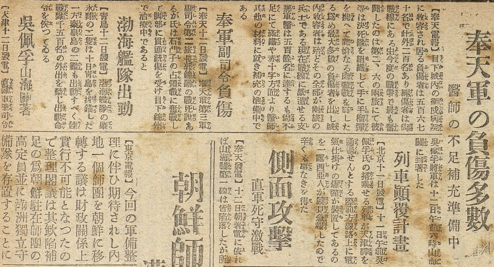

京城日報
Keijō Nippō (Seoul), 14 October 1924
Newspaper · Catalogue · Warlord era 北洋軍閥時期 · The Second Zhili–Fengtian War

Introduction
Six items from the war page of the Keijō Nippō, the Japanese-language daily of Seoul, of 14 October 1924: telegrams of 11–12 October from the Shanhai Pass front of the Second Zhili–Fengtian War, on the Fengtian wounded, the wounding of Guo Songling, the Zhili fleet, Wu Peifu's arrival at the front and a plot against his train.
The transcription keeps the paper's characters and its furigana, in the historical kana spelling of the time. Chinese names are given in the translation in their Japanese readings, as the paper's readers read them; each Persons and Places entry gives the pinyin.
Text and Translation
Text: Japanese source
Text: English Translation
Annotations
奉天軍の負傷多數
醫師の不足補充準備中
Many wounded in the Hōten army
Shortage of doctors; reinforcements in preparation
【奉天電報】目下城內の衛戍病院に收容され居る負傷者は五百六七十名で此外二百名あり輕傷者は尚戰線にある由
【Hōten telegram】1The wounded now housed in the garrison hospital within the city walls2 number five hundred and sixty or seventy3, and there are two hundred more besides; the lightly wounded are reported4 to be still at the front.
今度の戰爭で最も奮鬪したのは第二、六の兩旅にて彼等は決死隊を組織して手に手榴彈を携へて悲愴なる肉彈戰を爲したる爲め最大多數の負傷者を出し城內收容者は殆どその全部が兩旅の兵士である
In the present war the hardest fighting fell to the Second and Sixth Brigades: they formed death squads and, grenades in hand, fought a grim battle of human bullets5, and so produced the greatest number of wounded; almost all of those housed in the city are soldiers of these two brigades.
現在戰線に派遣せる支那軍醫は五百餘名に達するも尚不足にて滿鐵や赤十字方面より醫師其他の材料に就き補充の準備中である
The Chinese army doctors now sent to the front number more than five hundred but are still too few, and preparations are being made to bring in doctors and other supplies from the South Manchuria Railway and the Red Cross.
奉軍副司令負傷
Hōten deputy commander wounded
【奉天十二日發電】奉天軍第三軍副司令第二旅長郭鐘齡の戰死說あるが氏は石門子の占領戰に奮戰して脚部に貫通銃傷を受け目下錦州で治療中であると
【Hōten, the 12th】6There is a report that Kaku Shōrei7, deputy commander of the Third Army of the Hōten army and commander of its Second Brigade, has been killed in action; but he fought hard in the battle for Sekimonshi8, took a bullet through the leg, and is now under treatment at Kinshū.
渤海艦隊出動
The Bokkai Fleet puts out
【青島十二日發電】渤海艦隊の肇永翔の二隻は十日青島を拔錨した一方秦皇島の二艦も出動すべく陸戰隊千五百名の外出を禁じ出動命令を俟つてゐる
【Chintao, the 12th】Two ships of the Bokkai Fleet, the Chōwa and the Eishō9, weighed anchor at Chintao on the 10th; the two ships at Shinkōtō are also to put out, and with shore leave stopped for their fifteen hundred marines they await the order to sail.
吳佩孚山海關著
Go Haifu arrives at Sankaikan
【天津十二日發電】直隸軍總司令吳佩孚將軍は十二日午前六時山海關に到着した
【Tenshin, the 12th】General Go Haifu, commander-in-chief of the Chokurei army, arrived at Sankaikan at six in the morning of the 12th.
列車顛覆計畫
Plot to derail a train
【北京十一日發電】十一日午前吳佩孚氏の搭乘せる列車が天津驛を通過せんとする際前方線路上に電氣仕掛けの爆彈が裝置してあるのを一露西亞人が發見急報したので辛くも事なきを得た
【Pekin, the 11th】On the morning of the 11th, as the train carrying Go Haifu was about to pass through Tenshin Station10, a Russian found an electrically fired bomb planted on the line ahead and gave the alarm, and so a disaster was narrowly avoided.
側面攻擊
直軍死守激戰
Flank attack
The Chokurei army fights hard to hold on
【奉天發電】十二日朝著電に依れば山海關第一線は皆陷落したが所
【Hōten telegram】By a telegram received on the morning of the 12th, the whole first line at Sankaikan has fallen.
Click each triangle to expand/collapse note
Top of page | Top of text